설정한 시간 동안 활동이 감지되지 않았어요
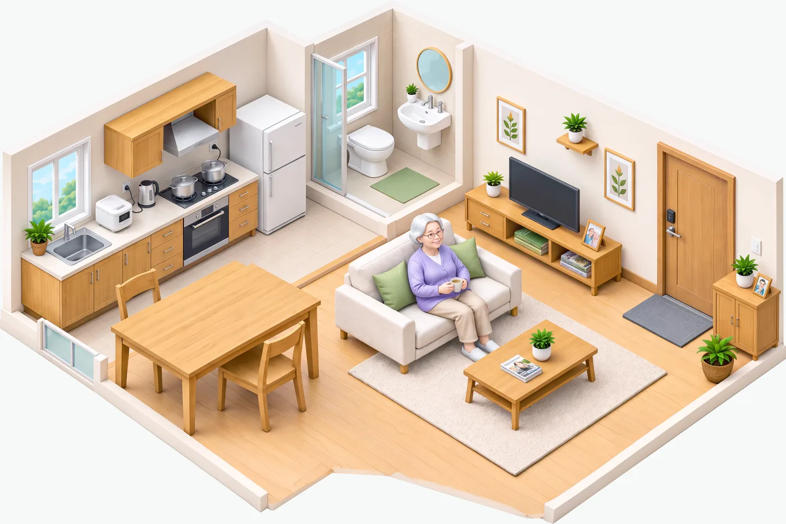
활동 미감지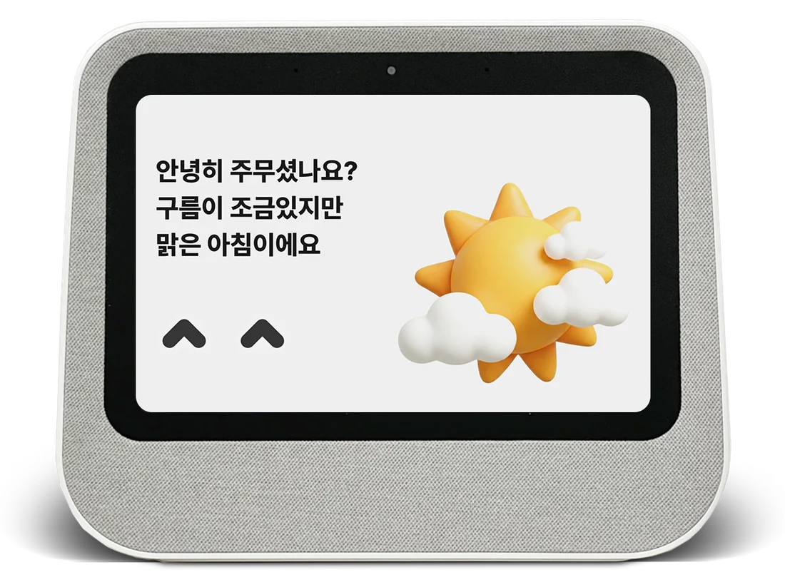
WHY NOVACARE
돌봄은 방문과 전화가 없는 시간에도 필요합니다. 노바케어는 일상의 작은 신호를 확인하고, 필요한 순간 사람의 돌봄으로 이어질 수 있도록 설계합니다.
누군가의 안부를 기다리지 않아도 되는 세상.
HOW NOVACARE WORKS
일상의 신호를 포착하고, 상황을 확인하고, 필요한 대응을 연결합니다.
생활·안전 신호 수집
조건에 따른 이상 이벤트 인식
음성 안부 확인·대화
관리자·관제·대응 절차 연계
확인·대응 이력 관리

활동 미감지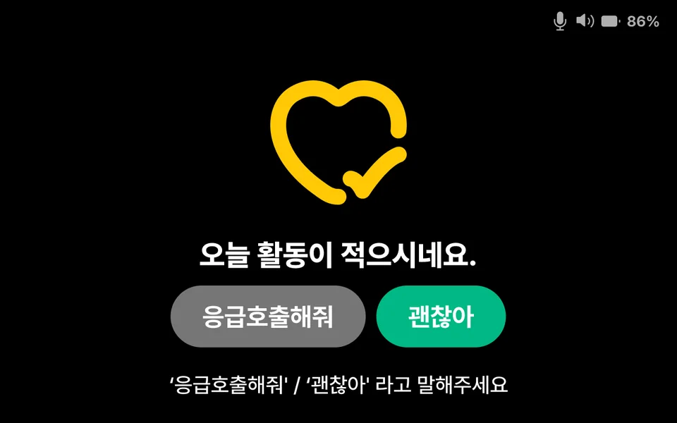
구성 예시입니다. 자동 판단, 대응 시간, 기관 연계 범위는 계약된 서비스와 운영 체계에 따라 달라집니다.
AI AGENT & MAKO
MAKO는 이용자가 자연스럽게 말을 건네는 AI 페르소나입니다. AI Agent는 일상 대화와 생활 지원, 특정 상황의 안부 확인을 수행하며 돌봄 운영 체계와 연결됩니다.
현재 제공실증 중개발 예정
시연 예시(시안)입니다. 실제 대화는 설정과 환경에 따라 다를 수 있습니다.
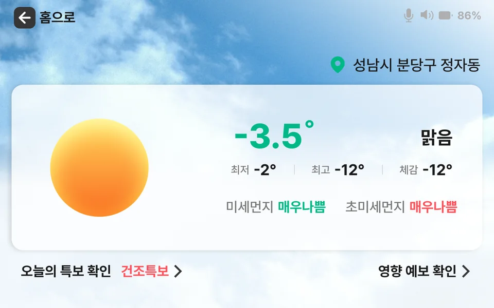
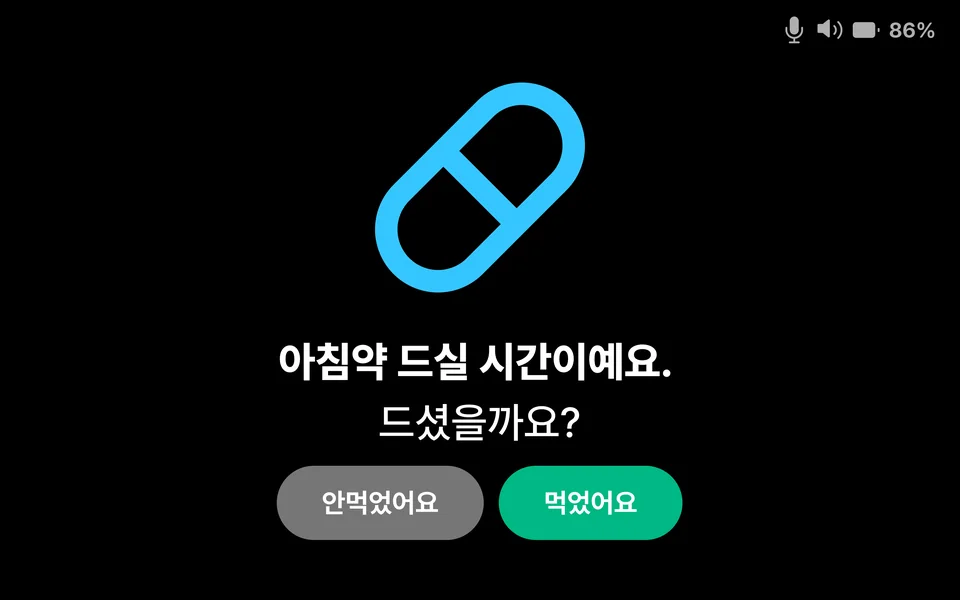
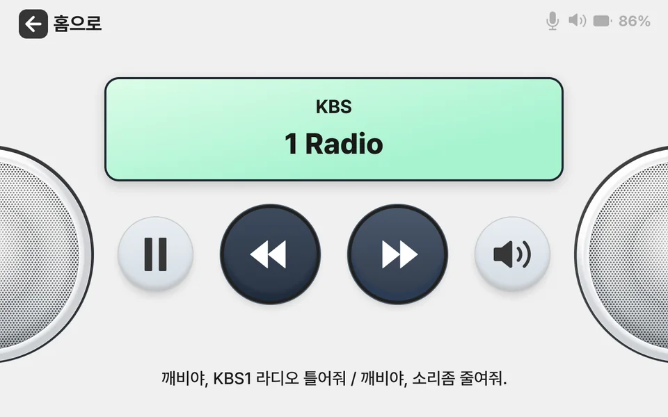
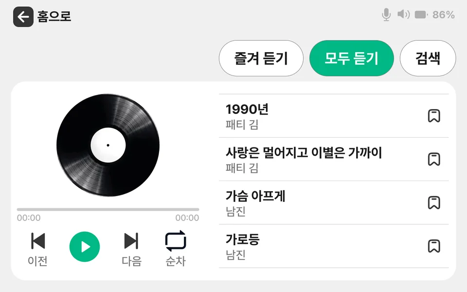
화면은 시안이며, 실제 제공 화면과 다를 수 있습니다.
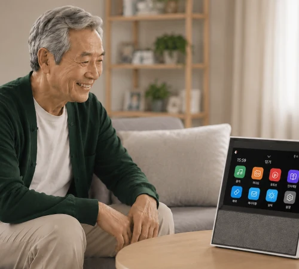
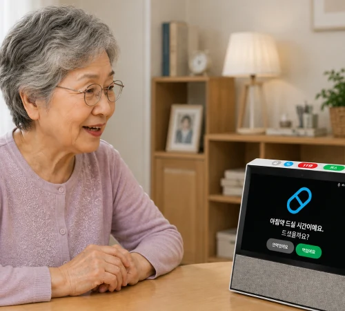
ONE CONNECTED CARE PLATFORM
홈스테이션, 생활·안전 센서, AI Agent, 기관 관리 화면과 관제 운영이 하나의 서비스 흐름으로 이어집니다.
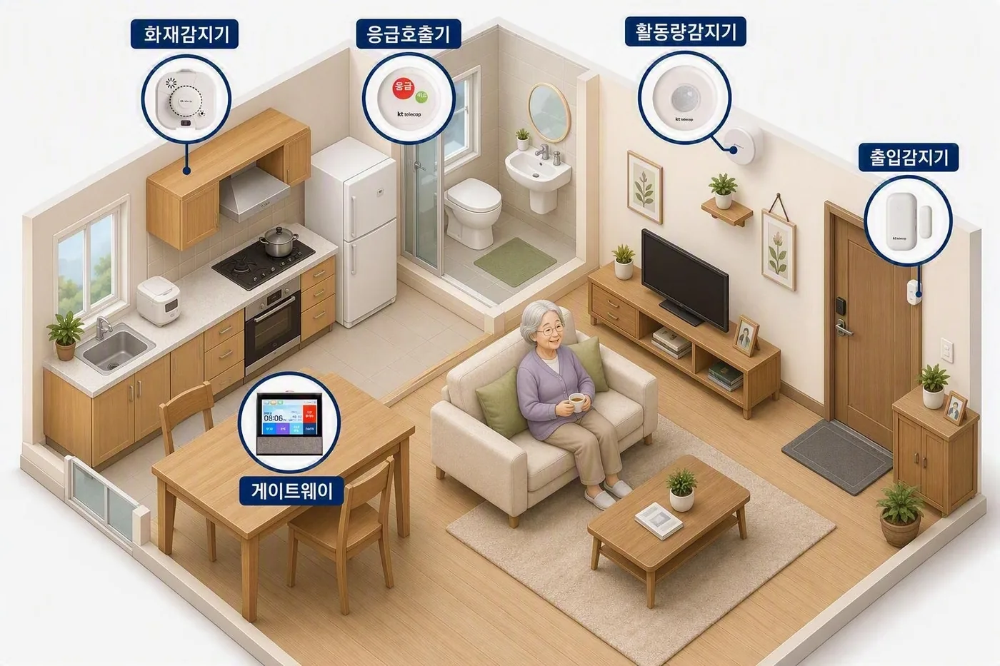
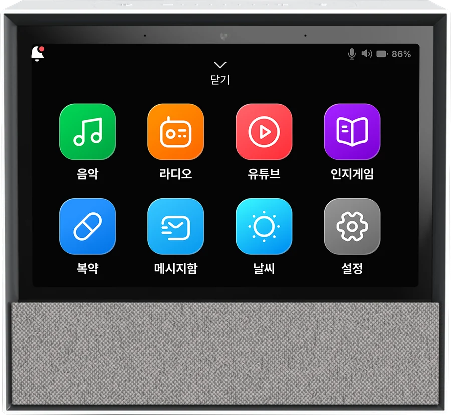
제공 주체, 권한, 데이터 흐름은 도입 계약과 최종 승인된 상품 구성 기준으로 안내합니다.
SOLUTIONS
돌봄 대상자의 생활 신호 확인과 기관의 관리·대응 업무를 지원합니다.
공공사업 상담하기입주자 생활 편의와 안전 확인, 운영자 관리 경험을 하나의 서비스로 연결합니다.
솔루션 데모 신청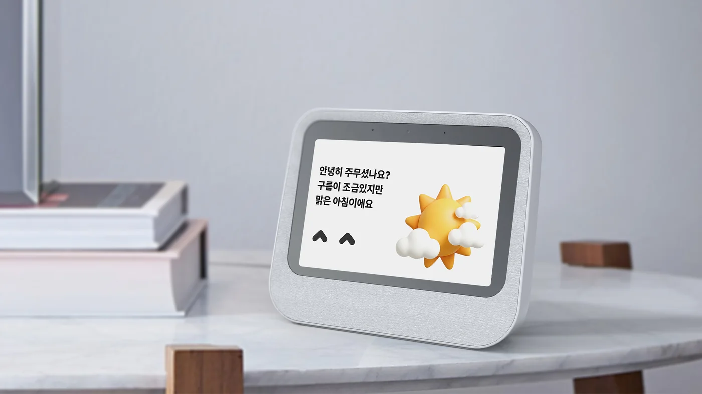
Partnership · 사업 제휴파트너의 고객 접점과 운영 환경에 맞는 서비스 연계 가능성을 함께 검토합니다.
제휴 문의하기BUILT ON EXPERIENCE
마크노바의 사업 수행 경험과 AI·서비스 운영 역량을 바탕으로 노바케어의 실제 도입 환경을 설계합니다.
기술 및 사업 제휴, IR 문의도 같은 창구로 받습니다.
GET STARTED
실제 적용 구성과 비용은 대상 기관의 환경과 운영 범위에 따라 협의합니다.
공공 돌봄, 시니어 주거시설, 제휴 서비스 등 적용 목적에 따라 검토합니다.
최종 제안 시점의 제품 구성표에 따라 안내합니다.
감지·확인·연계의 실제 범위는 계약된 서비스와 운영 체계에 따릅니다. 자동 신고를 보장하지 않습니다.
기관 운영 주체와 계약별 권한에 맞게 설정합니다. 세부 기능은 데모에서 확인하실 수 있습니다.
제안서와 계약 조건에서 운영 범위, 지원, 개인정보 처리 기준을 설명합니다.
문의 접수 후 적용 가능 범위와 일정을 협의합니다.